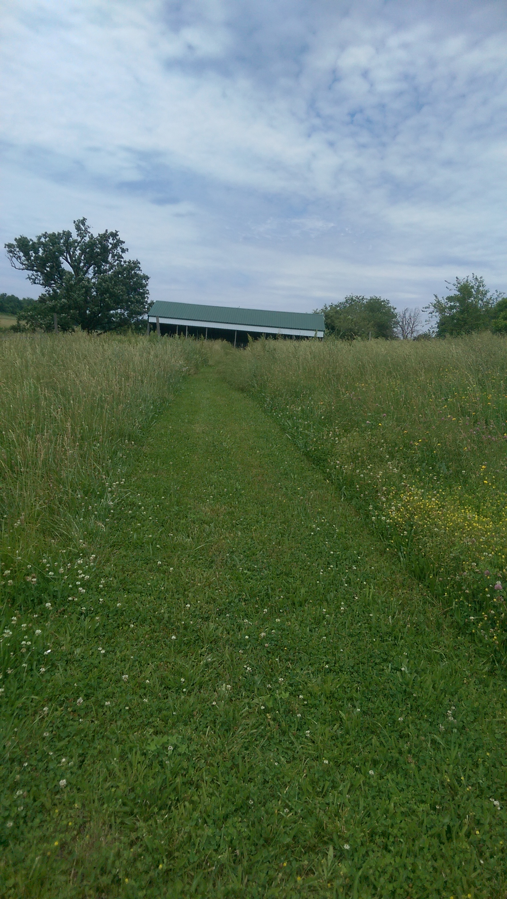

Farm History
We purchased Storm Dancer Farm in 2015 after spending over a year trying to find a property with the right balance of farm potential, proximity to family and jobs, and safety for running. We got lucky and have a great balance of everything.
The property originally was part of a much larger farm that extended up and down our side of Smithville Lake, but has been subdivided since into many lots similar to ours. The original farmhouse sits on the lot north of ours; our house is circa 1994. We do own an old old concrete bridge that originally spanned a creek and likely was part of the road to the farmhouse. The creek has since been dammed up into a pond, but the bridge is still there.
To our knowledge, previous owners have owned horses and some cattle, and cut hay. We inherited a large (intact) cattle barn and the skeleton of an older shed and chute system...for future renovation?
Our hope is to keep the farm in grass and improve the quality and production of forage, to raise pastured cattle for home use and some sales. Margaret received her Master's degree in Animal Science with a focus on grazing cattle, and is ready to apply all of the fence- building and pasture-managing experience she got.